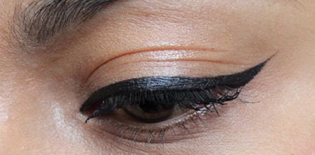

Противопоказания
Абсолютными противопоказаниями считаются:
1. Болезни, связанные со значительным снижением свертываемости крови.
2. Инсулинозависимая форма сахарного диабета
3. Онкология в стадии обострения
4. Острые воспалительные заболевания (ОРВИ,ОРЗ, высокая температура)
5. Кожные заболевания в стадии обострения
6. СПИД, гепатит и другие заболевания крови
7. Склонность к рубцам
8. Употребление алкоголя (Непосредственно до процедуры и за день до нее).
9. Беременность и период лактации
10. Тяжелые соматические заболевания в стадии обострения
11. Инъекции в места татуажа гиалуроновой кислоты (если после инъекции прошло менее полугода)
12. Тремор, эпилепсия, истерические заболевания (невроз, паническая атака, психоз, расстройство личности и пр.)
Относительные противопоказания:
1. Высокое артериальное давление.
Если клиент страдает гипертонией – рекомендуется измерить артериальное давление перед процедурой и при необходимости
принять препарат снижающий давление.
2. Множественные аллергические реакции. В этом случае имеет смысл сделать аллергическую пробу и проверить
как будет реагировать организм на обезболивающие препараты, которые планировали применять в ходе процедуры и на пигмент.
3. Воспалительные заболевания кожи в предполагаемой зоне проведения татуажа (в период их обострения). Угревая болезнь 3и 4
степени (наличие воспалительно-гнойных очагов) и розовые угри (воспалительная форма заболевания) в стадии обострения
являются противопоказанием к проведению процедуры. В этом случае следует пройти курс лечения у врача-дерматолога.
4. Герпес в стадии обострения. Необходимо пройти курс лечения противовирусными препаратами. Людям страдающим частыми
появлениями герпетических высыпаний на губах – татуаж губ очень рекомендован: во-первых после процедуры отпадает
необходимость в частом использовании помады, которая является постоянным источником раздражения красной каймы губ,
,а иногда и инфицирования, во-вторых красная кайма губ после татуажа несколько уплотняется, что является препятствием
для появления высыпаний герпеса.
Памятка перед процедурой ПМ
Накануне татуажа и в день нельзя принимать алкоголь.
Препараты разжижающие кровь (аспирин и другие), препараты для лечения гормональных растройств являються противопоказанием
. (если вы в течение месяца до процедуры проходили лечение антибиотиками или другими сильнодействующими препаратами,
процедуру стоит отложить.) .
Не стоит накануне пить кофе, крепкий чай, энергетические напитки.
Перед татуажем губ, за 2-3 дня и после 5 дней нужно применять
препараты против герпеса-например ацикловир, 2 раза в день.
Если клиент аллергик, то приём противогерпесных препаратов
осуществляется вместе с антигистаминными препаратами(зиртек,
кларитин...)
Перед татуажем век нельзя завивать ресницы. Желательно за день до татуажа не носить линзы.
За пару дней и в дни менструации лучше отложить процедуру.
За сутки и в день татуажа откажитесь от солярия, после нельзя посещать солярий и жаркие страны 2 недели.
В день татуажа Не принимаем витамины.
После процедурный уход за веками.
- Первые сутки после процедуры нанесение гидрокартизоновой глазной мази 0,01% 2
раза в день, либо пантенол, возможно накладывание примочек раствором миромистин на 1-2 минуты
- 2 сутки-и…(до схождения корочек как правило не более 8 дней) нанесение гидрокартизоновой
глазной мази 0,01% 2 раза в день, либо пантенол
- -Для снятия отечности принять антигистаминные средства (Тавегил,Супрастин)
После процедурный уход за бровями
- -Первые сутки промыть Миромистином, нанести тонким слоем вазелин
- -Наносить вазелин 2 раза в сутки до схождения корочки
После процедурный уход за губами
- Герпес - ОЧЕНЬ частое осложнение, возникающее после процедуры. Для профилактики после процедуры в
течение 4-5ти дней принимать Ацикловир 400 мг 2 раза в день либо Вальтрекс.
-Так же на губы наносить вазелин 2 раза в сутки до схождения корочек
ПОЛНОЕ ВОССТАНОВЛЕНИЕ ЦВЕТА ПРОИСХОДИТ В ТЕЧЕНИЕ МЕСЯЦА

В течении этого времени цвет будет несколько раз меняться
-1-5(7) дней после процедуры-цвет очень темный с оттенком коричневого
-5-7(14) дней –цвет в 2-3 раза светлее первоначального, слегка красноватый
-14-21 день-уходит краснота, цвет слегка белесоватый
-21-30 день –цвет темнеет и приобретает запланированный оттенок
После полного заживления при необходимости проводится коррекция
ВАЖНО ЗНАТЬ И ПОМНИТЬ!!!
- Интенсивность цвета выполненного перманентного макияжа уменьшается примерно на 50% после отторжения корочки
- Корочка, образовавшаяся после проведения процедуры, оказывает очень большое влияние на качество процедуры
- корочка должна как можно дольше оставаться на коже
- ни в коем случае нельзя её травмировать и размягчать
- не наносить на нее косметические средства
- по возможности, 24 часа избегать попадания воды
- до заживления не принимать солнечных ванн, избегать посещений сауны и солярия
- не использовать тональный или парфюмерные крема
- при проведении процедуры на губах отказаться от поцелуев до тех
пор, пока корочка не заживёт, во избежание попадания бактерий
Вопрос - ответ
1. Что такое Перманентный Макияж (Татуаж)?
Перманентный макияж(Татуаж) не является лечебной процедурой. Татуаж заменяет обычный косметический макияж. Сутью этой процедуры является введение в кожу красящих веществ и создание устойчивого цвета и необходимого эстетического эффекта на длительный срок.
2. Кому нужен Перманентный Макияж (Татуаж)?
Каждой женщине, которая хочет выглядеть хорошо, которая хочет быть уверена в своем макияже.
3. Какие приемущества у Перманентного Макияжа (Татуажа)?
* Абсолютная водостойкость
* Отпадает необходимость носить с собой косметику
* Перманентный Макияж(Татуаж) не смазывается в любую погоду.
* Перманентный Макияж(Татуаж)невозможно испортить в спортзале, сауне.
* Не нужно просыпаться рано, что бы успеть нанести макияж.
* Нет необходимости подправлять макияж несколько раз в день
* Великолепная возможность выглядеть прекрасно в любое время суток
* Перманентный Макияж(Татуаж) остается на вашем лице длительное время.
4. Это больно?
Будьте уверены, что для обеспечения Вашего максимального комфорта, будут использованы самые лучшие обезболивающие средства. Перманентный макияж не предполагает значительного травмирования кожи.
5. Безопасен ли Перманентный Макияж(Татуаж)?
Да,эта процедура безопасна! При выполнении процедуры Перманентного Макияжа(Татуажа), соблюдаются все гигиенические требования, для данных процедур. Я использую только гипоаллергенные, сертифицированные пигменты.
6. Есть ли риск заражения?
На протяжении всех этапов проведения процедуры Перманентного Макияжа(Татуажа), я придерживаюсь всех требований санитарных и гигиенических норм!Я использую только стерильные одноразовые иглы, которые открываются в присутствии клиента.Все расходные материалы ( насадки, колпачки, салфетки, краски ит.д)одноразовые - используются только для одгого клиента. При проведении процедуры Татуаж губ возможна вспышка герпеса, на травмированных участках кожи, но это может случиться только если клиент уже имеет этот вирус. Чтобы предотватить это,рекоменжуются некоторые лекарства, которые Вы должны будете преобрести в аптеке. Вы должны будете принимать его по рекомендациям, которые вам даст специалист.
7. Перманентный Макияж(Татуаж), насколько это дорого?
Перманентный макияж(Татуаж) не дорогое удовольствие, если посмотреть на него как на долгосрочный проект.Это стоит каждого рубля вложенного в этот проект, потому что дает Вам уверенность в своем внешнем виде, экономит время. Это то что ждут многие женщины.
8. Перманентный Макияж(Татуаж) будет выгляднть ненатурально и декоративно?
Ни в коем случае! Ваши брови и губы будут всегда естественны и деликатны.
9. Как долго сохраняется Перманентный Макияж(Татуаж)?
От многих месяцев, до нескольких лет.Опять же срок жизни Татуажа зависит от человека и его уникальной способности регенерации клеток. В первые 4 недели после выпоонения процедуры следует позаботится о том, чтобы не подвергать Перманентный Макияж(Татуаж) облучению лучами UVA, воздействию хлора, солей и сауны. Иначе это сократит срок жизни татуажа.
10. В какие сроки заживает Перманентный Макияж(Татуаж)?
На второй день после выполнения татуажа,по всей поверхности татуажа образуется микрокорочка. Она будет сухой на ощупь и будет отшелушиваться в течении нескольких дней. Перманентный Макияж(Татуаж) малотравматичная процедура и с использованием гипоаллергенных преапратов риск аллергической реакции крайне не высок. Ваш обычный ритм жизни не пострадает от этой процедуры.
11. Что я буду испытывать после процедуры Перманентного Макияжа(Татуажа)?
Сразу после процедуры у Вас может возникнуть небольшой отек и покраснение, которые спадут в течение 2 - 4 часов. Перманентный Макияж(Татуаж) сразу после процедуры будет выглядеть значительно темнее примерно на 30-50%. В течении нескольких дней после процедуры, кожа восстанавливается, регенерирует, цвет смягчается и становится светлее. И постепенно Ваш перманентный макияж(татуаж) приобретет естественный желаемый вид.
12. Как скоро я могу появляться на улице?
Немедленно! Как упоминалось ранее, цвет макияжа может быть немного темнее, чем хотелось. Но это будет только в течении первых нескольких дней.Что касается корочек, то они едва заметны и не мешают общению.
13. Как долго длиться процедура Перманентного Макияжа(Татуажа)?
В зависимости от области где делается Перманентный Макияж(Татуаж), сама процедура занимает от одного до двух часов. 2-3 часа назначается для каждого клиента, для тщательного подбора формы и цвета.
14. Можно ли наносить косметику после процедуры?
Не рекомендуется пользоваться косметикой в областях нанесения перманентного макияжа(татуажа) до его полного заживления. После заживления Вы можете наносить косметику как обычно.
15. Могу ли я заниматься спортом и купаться сразу же после процедуры Перманентного Макияжа(татуажа)?
Перманентный Макияж(Татуаж) не позволяет заниматься спортом в день выполнения процедуры, и в последующие дни когда идет процесс заживления . Избегайте посещение бассейна, сауны, паровой бани, по крайней мере 7 дней.
16. Обязательно ли заполнять форму соглашения на процедуру?
Да. Все согласия и данные должны быть вписаны и заполнены до выполнения процедуры. Перманентный Макияж(Татуаж) делается толко после этого. После проведения процедуры, Вы получите советы по уходу за Вашим татуажем.
17. Через какое время Перманетный Макияж (Татуаж) приобретает окончательный вид?
После того как сойдут первые корки, будет еще легкое поверхностное шелушение верхнего травмированного сухого слоя эпидермиса. Через него цвет виден блеклым и более холодных оттенков. Окончательный цвет и его насыщенность возможно увидеть только после полного восстановления кожи. Через 1-1,5 месяца после проведенной процедуры.
18. Не портится ли зрение после Перманентного Макияжа на веках?
Перманентный Макияж(Татуаж) не влияет на зрение.
19.Можно ли делать Перманентный Макияж(Татуаж) при гепатите С ?
Да можно, клиенту ничто не грозит. Это больше должно волновать специалиста для соблюдения стерильности.. Специалисты перманентного макияжа обязаны работать стерильными одноразовыми инструментами и красками... И обрабатывать кабинет и кушетки так, как будто каждый наш клиент был инфицирован. А это значит - МЫ ДОЛЖНЫ РАБОТАТЬ АККУРАТНО, ЧИСТО , СТЕРИЛЬНО!
20. Перманентный Макияж(Татуаж) это то же что и татуировка?
Нет. При выполнении татуировки пигмент проникает в глубокие слои кожи и практически навсегда остается в них в отличие от перманентного макияжа, который со временем выцветает.
21. Перманентный Макияж(Татуаж) – есть ли для него противопоказания?
СПИД, сахарный диабет инсулинозависимый (легкая форма - после консультации с лечащим врачом), гемофилия, обострение кожных заболеваний (псориаз, экзема), длительный прием сильнодействующих препаратов (антибиотики, антикоагулянты), наличие келоидных рубцов, острые воспалительные заболевания, психические расстройства, эпилепсия, наличие новообразований неизвестной этиологии, онкологические заболевания.
22. Какие ограничения перед процедурой Перманентного Макияжа(Татуажа)?
За сутки не употреблять алкоголь, кофе, колу, препараты обезболивающие и разжижающие кровь. При проведении процедуры на губах за 2-3 дня необходима профилактика герпеса.
23. Если сделать Перманентный Макияж(Татуаж) бровей, повреждаются ли при этом волоски?
Нет! Все Ваши волоски на бровях останутся, т.к при выполнении перманентного макияжа(татуажа) мы не травмируем луковицы.
24. Сбриваются или удаляются волоски на бровях при процедуре татуажа?
Нет! Волоски не мешают делать Перманентный Макияж(Татуаж). Мы только корректируем форму, удаляя лишние волоски, которые не вписываются в форму Вашего перманентного макияжа(татуажа).
Мое образование:
Являюсь мастером по перманентному макияжу , владею всеми основными техниками перманентного макияжа.
Аппаратные техники:
-мягкая растушевка ,
-пудровая
-теневая
-акварельная,
-шотирование (Брови, губы, веки).
-Успешно окончила обучение в немецкой школе "MY STYLE" по щадящим, европейским методикам;
-Визажист;
-Имею медицинское образование;
-Специалист в своей работе, придерживаюсь стиля «Акварель» и
"Пудровое напыление", пропагандирую естественный перманентный макияж.
-Работаю мягко, мои работы выглядят эстетично и естественно.
-Не приемлю шаблоны, с душой отношусь к каждому, кто приходит ко мне на перманентный макияж!